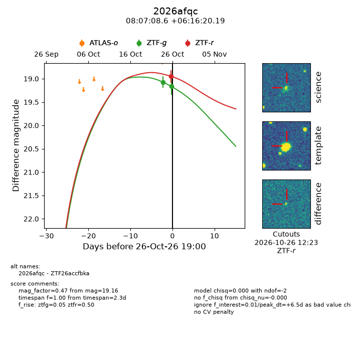
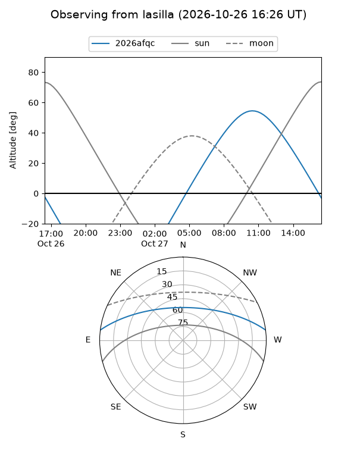
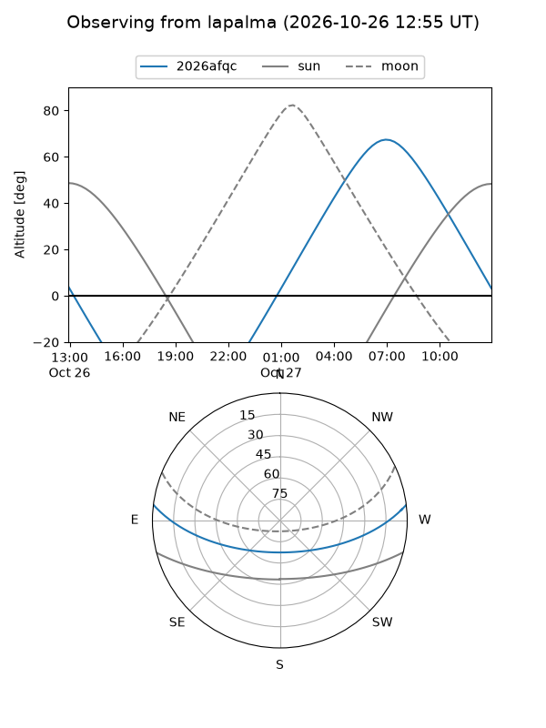
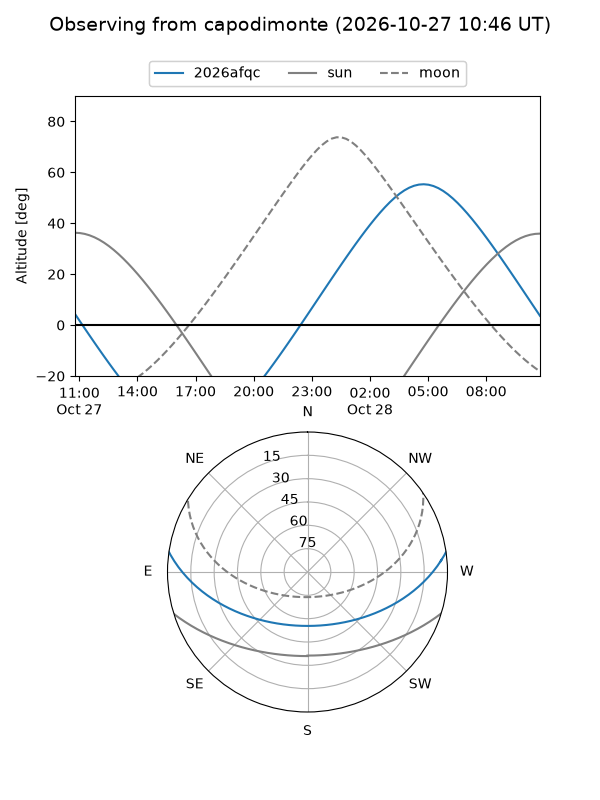
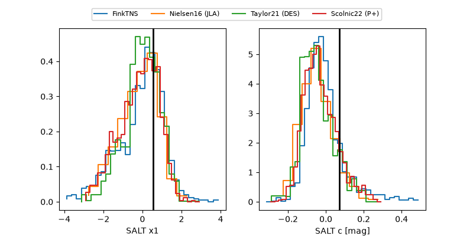

2026afqc
Target 2026afqc at 2026-10-26 19:01
Aliases and brokers:
FINK-ZTF: ztf.fink-portal.org/ZTF26accfbka
Lasair-ZTF: lasair-ztf.lsst.ac.uk/objects/ZTF26accfbka
ALeRCE-ZTF: alerce.online/object/ZTF26accfbka
YSE-PZ: ziggy.ucolick.org/yse/transient_detail/2026afqc
TNS name: wis-tns.org/object/2026afqc
Direct TNS query: direct search
alt names
ZTF26accfbka (ztf,fink_ztf)
2026afqc (tns,yse)
Coordinates:
equatorial (ra, dec) = 121.7860,+6.27227
equatorial (HMS+DMS) = 08:07:08.65,+06:16:20.19
galactic (l, b) = (215.9625,+19.67975)
Flags:
peak dt: +6.5
Photometry:
last ztfg=19.16, ztfr=18.95
2 ztfg, 1 ztfr detections
Lightcurve

Visibility



Additional plots
